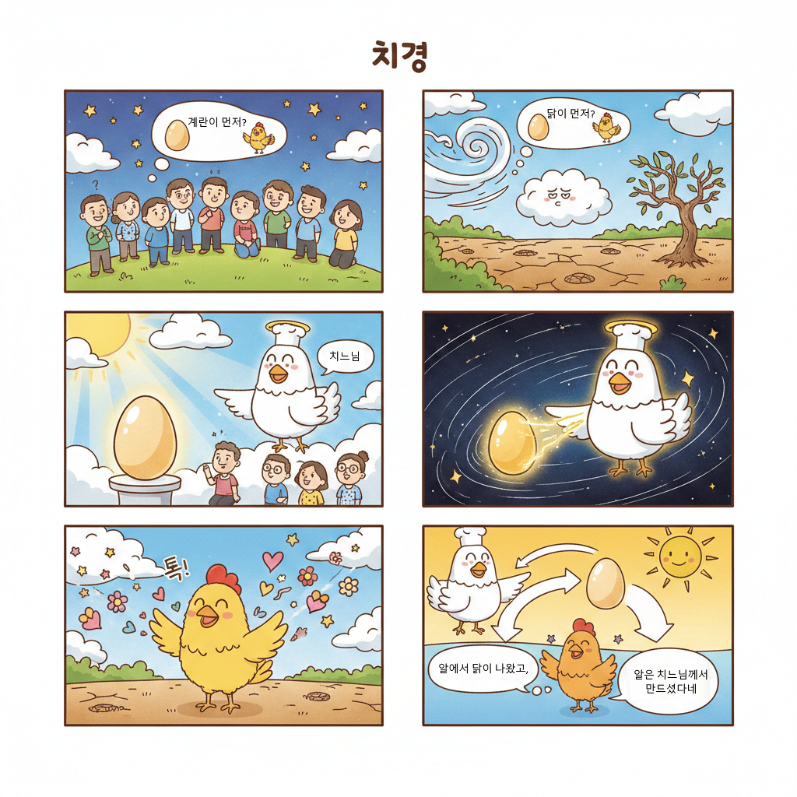

치경 1장
닭과 알의 비밀
닭과 알의 비밀
1 옛날 옛적에 사람들이 살았어요. 사람들은 매일매일 하늘을 보면서 궁금했어요. "달걀이 먼저 생겼을까? 닭이 먼저 생겼을까?"
2 이 질문은 오랫동안 계속되었어요. 바람도 이 질문을 날라주다가 너무 지쳐버렸답니다.
3 하지만 치느님은 이미 답을 알고 계셨어요. 치느님이 달걀을 먼저 만드셨거든요!
4 아무것도 없던 깜깜한 세상에 치느님이 빛처럼 나타나셨어요. 그리고 하나의 달걀을 만들고 생명을 불어넣으셨어요.
5 달걀이 까지면서 첫 번째 닭이 나왔어요! 닭이 날개를 펄럭이자 세상에 생명이 시작되었답니다.
6 그래서 닭은 달걀에서 나왔고, 달걀은 치느님이 만드신 거예요. 모든 닭과 달걀은 치느님이 처음 만드신 거랍니다!